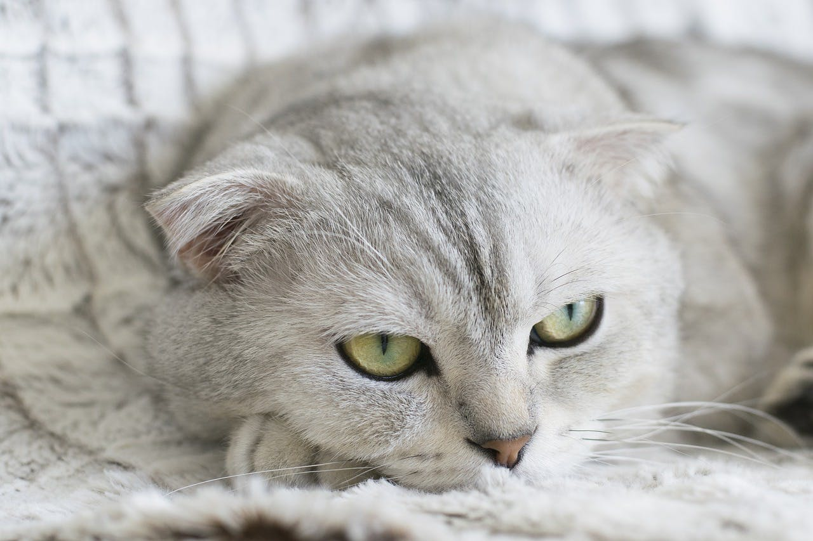

Pet Channel
| |
| แมวสก็อตติช โฟลด์ (Scottish Fold) |
|  |
ลักษณะทั่วไป สายพันธุ์ถูกค้นพบโดยชาวสก็อตคนนึงที่ชื่อว่า William Ross เขาพบว่าแมวของเพื่อนบ้านเชานั้นมีลักษณะขนสีขาว และใบหูพับที่ปกติ จนเขาตัดสินใจซื้อลูกของแมวตัวนั้น เพื่อมาขยายพันธุ์จนทำให้เกิดพันธุ์ Scottish Fold ขึ้นมา โดยแมวพันธุ์นี้มีลักษณะตัวกลม หัวกลม มีช่วงคอสั้น ดวงตากลมใหญ่ และมีหูตั้งตรงขนาดกลาง ไปจนถึงหูพับขนาดเล็กที่มีมุมพับกว้าง ปลายหูส่วนใหญ่จะกลม หูของลูกแมวจะเริ่มพับในช่วง 2-3 อาทิตย์แรก จมูกสันโค้งกว้างรับกับดวงตา ซึ่งบางตัวมีปากโค้งได้รูปรับกับคาง ในส่วนนิสัยนั้นเป็นแมวที่ไม่ค่อยชอบส่งเสียง ชอบทำกิจกรรมบาง โดยสุขภาพของแมวพันธุ์มักจะแข็งแรงอยู่แล้ว |